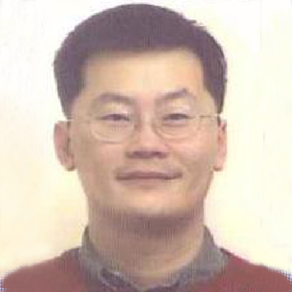

<div class="container">
    <div class="row">
        <div id="speaker-detail" class="col-lg-6 col-lg-offset-3">
            <div class="row">
                <button title="Close (Esc)" type="button" class="mfp-close">×</button>
                <div class="col-md-4 col-lg-4">
                    
                    <br />
                </div>
                <div class="col-md-8 col-lg-8">
                    <h2>Andrew Ho, 何伯容 醫師</h2>
                    <h3>Executive Director, Clinical Development, SK Life Science</h3>
                    <p>Andrew was born in Taiwan and moved to the U.S. with his parents when he was 11 years-old.  After graduating from UCSD School of Medicine and completing training in psychiatry, he was faculty at UCLA for more than 10 years.  In 2007, Andrew joined his best friend at Merck and started to learn drug development.  Since that time, Andrew has led Phase I, II, and III teams at Merck, Amgen, Takeda, and Forum Pharma.  He is currently the second MD and the only psychiatrist responsible for the psychiatric portfolio at SK.</p>

                </div>
            </div>
        </div>
    </div>
</div>
